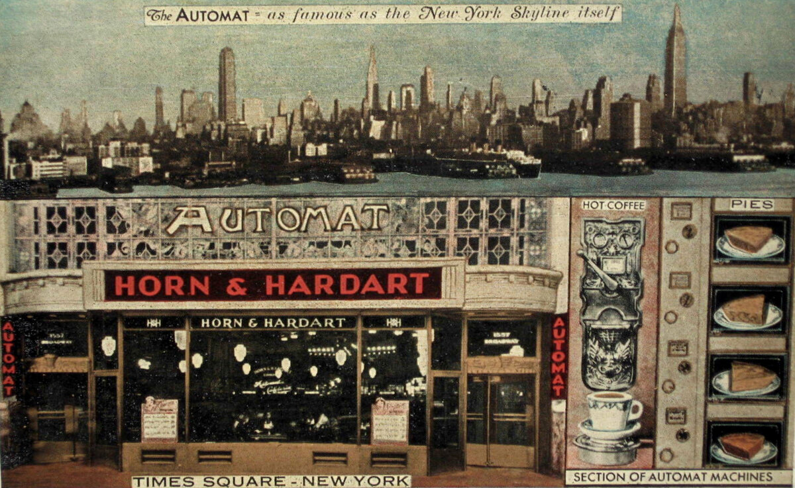
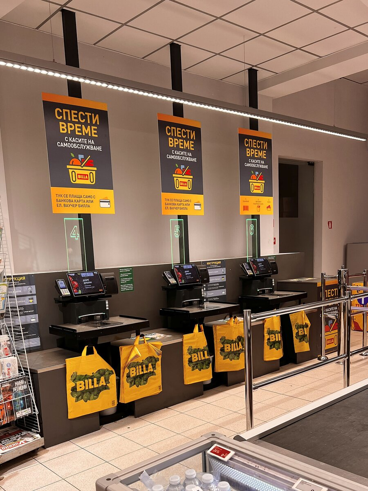

C1 · Technology
The Cost of Convenience
Every convenience you accept is a small transfer of control, and most of them are worth it. The difficulty is noticing which.
Play the audio and follow along, then read it again on your own. Tap or hover over a highlighted word to see what it means.
A convenience is something that removes a step. The phone that unlocks when it sees your face has removed the step of typing; the car that parks itself has removed the step of parking. Each removal is small, agreeable, and almost never examined, because examining it costs more effort than the step it replaced.
What is given up is usually one of three things, and it is worth being able to name them.

The first is capability. A skill that is never exercised decays, and this is not sentimental — it is measurable. Drivers who rely on satellite navigation build weaker mental maps of cities they have lived in for years, and the effect appears after months rather than decades. Whether that matters depends entirely on whether you will ever need the capability unaided. For most people, most of the time, the answer is no, and the trade is good. The difficulty is that you discover you needed the skill at the moment the system fails, which is also the moment you cannot practice it.
The second is visibility. A convenient system hides its workings, and hiding them is precisely what makes it convenient. The trouble is that a hidden system cannot be audited by the person it acts on. When an algorithm decides which applications reach a human recruiter, the applicant cannot see the rule, cannot know whether it was applied correctly, and in many cases cannot establish that it was applied at all. Opacity here is not a side effect of complexity; it is a design choice that happens to be cheaper than the alternative.
The third is leverage, and this is the one that compounds. Convenience is habitually bought with data, and data creates a relationship that is difficult to leave. The cost of switching away from a service that holds a decade of your documents, contacts and history is not the price of the alternative but the price of the migration, and that cost rises every month you stay. Nobody is deceived by this. It is simply a good deal at the start and a progressively worse one later, which is the shape of most arrangements people regret.

The reflexive response — that one should therefore resist convenience — does not survive contact with how people actually live. A person who refuses navigation, online banking and recommendation systems in order to preserve capability, visibility and independence has spent a large quantity of the only genuinely non-renewable resource they have in order to protect against risks that may never arrive. Inconvenience is not a virtue, and the aesthetic of self-reliance has sold a great many people a worse life.
The usable distinction is between conveniences that are reversible and conveniences that are not. If you can stop using the navigation app tomorrow and find your way with a map, the trade was cheap and you may take it freely. If you cannot leave a platform without losing material you cannot reconstruct, the trade was not really about convenience at all, and it deserved a different kind of attention at the moment you made it — which was years before you noticed.
The question worth asking of any new convenience is therefore not whether it makes something easier. It will. It is what specifically happens if it disappears, and whether the answer is an inconvenience or a loss. Most of the time it is the first, and the thing should be adopted without agonising. Occasionally it is the second, and that is the case where the five minutes of examination costs less than the decade of dependence.
Key Vocabulary
- convenience something that makes a task easier by removing a step
- agreeable pleasant; easy to accept
- capability the ability to do something yourself
- to decay to weaken gradually through disuse
- sentimental based on feeling rather than evidence
- unaided without help
- to audit to examine formally to check it is correct
- applicant a person applying for a job or a place
- opacity the quality of being impossible to see into
- side effect an unintended result
- leverage the power one side holds over the other in a relationship
- to compound to grow by building on itself
- migration the work of moving everything from one system to another
- to deceive to make somebody believe something untrue
- progressively more and more as time passes
- reflexive done automatically, without thought
- non-renewable impossible to replace once used
- self-reliance depending on yourself rather than on others
- reversible able to be undone
- to reconstruct to build again from what remains
- to agonise to worry at length over a decision
- dependence the state of needing something you cannot do without
- actually in fact, really — careful: not 'at the moment'
The Cost of Convenience — C1 · Technology · Renan the Teacher, English Language Academy · https://renangrossi.github.io/englishclasses/reading/c1/the-cost-of-convenience.html
Interactive Exercises
Practice
Complete each exercise, then click Submit to see your score and an explanation for every answer.
Speaking & Writing
Discussion
There are no right answers here — use these to practice speaking, or write a short answer to each.
- Name a convenience you use daily. What specifically happens if it disappears tomorrow?
- Which of the three costs — capability, visibility, leverage — worries you most, and why?
- “Inconvenience is not a virtue.” Do you agree?
- Is there a service you would struggle to leave? When did that become true?
- Write about 300 words on a convenience you decided was not worth the trade.